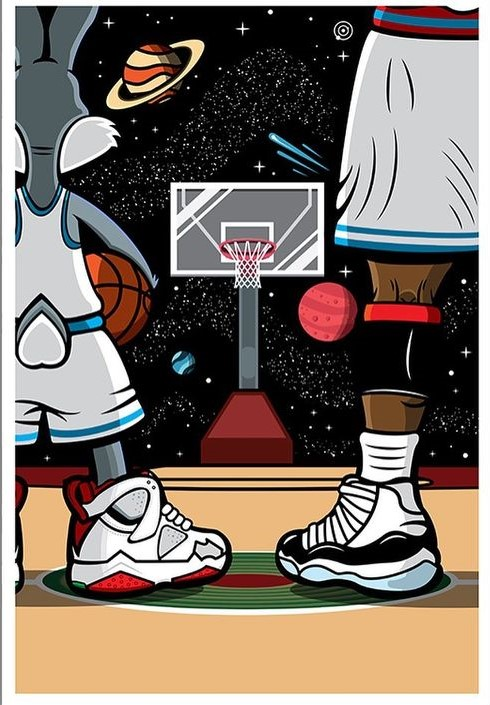
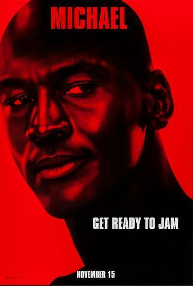
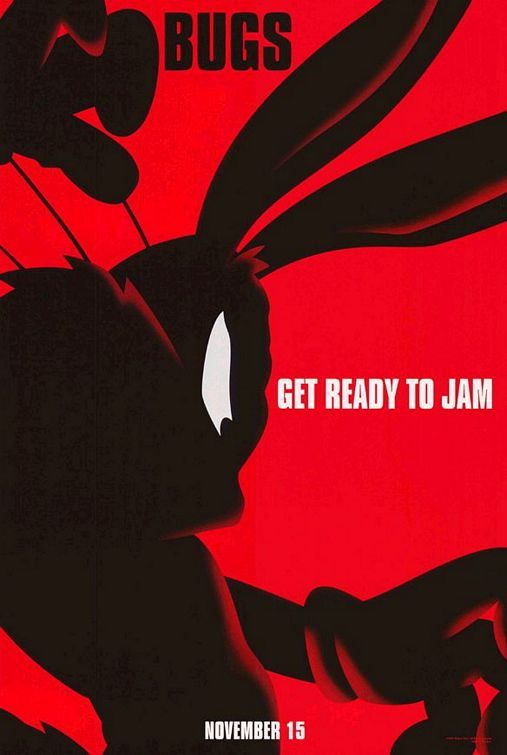
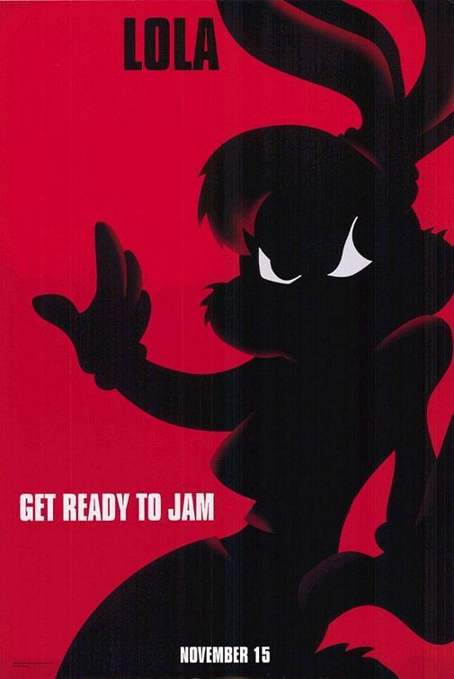
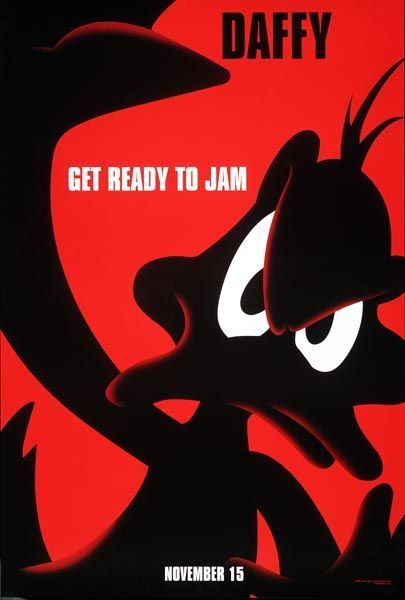
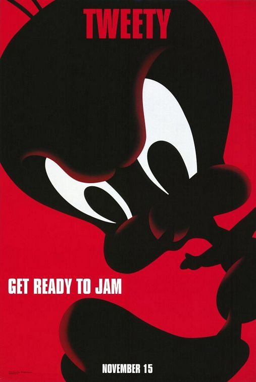
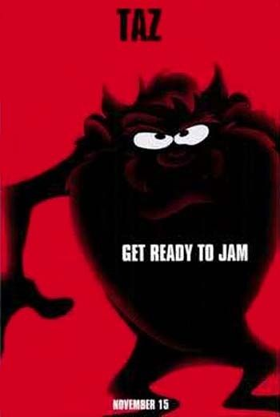

Space Jam.
Get Ready to Jam
About
Space Jam is a 1996 American live-action/animated family sports comedy film directed by Joe Pytka. Starring basketball player Michael Jordan,[3] the film depicts a fictionalized account of what happened between Jordan's initial retirement from the NBA in 1993 and his comeback in 1995, in which he is enlisted by Bugs Bunny, Daffy Duck and the rest of the Looney Tunes characters to help them win a basketball match against a group of aliens who want to enslave them for their amusement park.
Meet the Characters






Basketball Tips
- Get yourself kitted : Generally there is very little you need to get started but it is important to get a good pair of basketball shoes as the wrong sort could lead to an injury. As the sport involves a lot of running and jumping, good support and cushioning is vital. There are high-top shoes that provide more support for ankles however feel a little heavier when playing. Mid-top shoes are a lighter choice but the downside is the ankle support is not as good. Decide on the best pair to suit your needs depending on your position and the level of competition you will be playing at.
- Warm up : It is advisable to warm up before starting a game of basketball. Warming up reduces the chance of injuries and is an efficient way to increase your ability to perform. Basketball is a fast paced sport so a sufficient warm up to prepare for the game ahead is vital. A good warm up should raise your heart rate and incorporate some drills before you start.
- Get in shape : Basketball is a physically challenging sport so it’s best to be in as good a condition as possible. The better shape you’re in, the greater your stamina, and the quicker your response time. This will also help avoid injury. Running will help raise your cardiovascular fitness for basketball and sports such as yoga will increase your flexibility and agility.
- Practice : There is no substitute for practice. Only by hard dedication working on key skills such as passing, dribbling and shooting can the player really hope to improve. Particularly as a beginner to the sport, mastering the fundamentals of basketball is crucial to your development and enjoyment of the game.
- Dribble with your weak hand : Be sure to practice dribbling with your weak hand until you can handle the ball as effectively with either hand. Always dribble with your head up, not down, so that you can see what is happening around you, and only dribble as fast as you can go while still keeping control of the ball.
- Shooting : To shoot more effectively, practice shooting everyday from a variety of positions. It is important to learn what your basketball shooting range is. Remember to always hold your follow through to maintain your technique and keep your eye on the rim of the basket for the duration of your shot.
- Jumping : Jumping is an important action that is often overlooked in basketball, however it shouldn’t be. For basketball players the ability to jump high is vital for collecting rebounds, blocking shots and shooting. This action should be developed through vertical jump training, which will not only improve the height you can reach but also your overall basketball performance.
- Don’t dribble too hard : One key error people make is thinking they have to bounce the ball as hard as they can when dribbling. Dribbling should be done with knees bent, a straight back, and head up. Dribble just a little above your knee height, and remember, it is better to gently bounce the ball and stay in control, rather than bouncing it too hard on the floor.
- Master some skills, then move onto others : Confidence grows by mastering a few skills, then moving on to others. It is better to be able to shoot from short range and then gradually extend the distance over time. As a beginner, master the basics first rather than trying to perform a slam dunk in your first practice session. For dribbling, control is better than speed and this will improve with practice.
- Get a good coach and study other players : If you have got a real taste for the game, then it might be worth joining a club where coaches can point you in the right direction and help you to develop your game. Watching other players, especially professionals, can teach the finer skills of the game such as movement, defensive and attacking tactics.